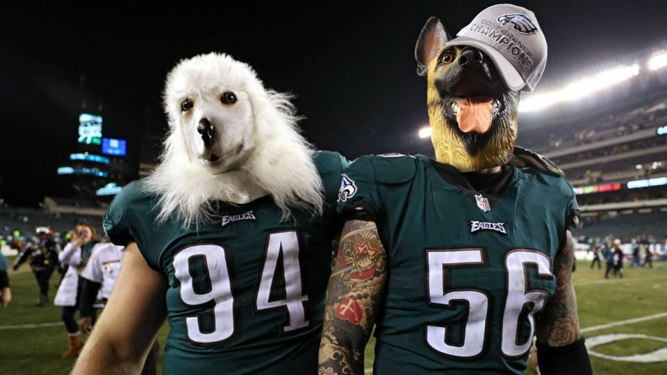
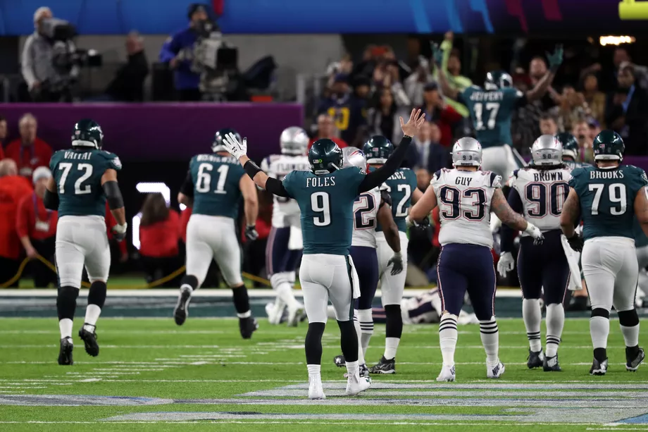

Nick Foles and the underdog Eagles did what so many other teams have failed to do. They killed a classic Patriots comeback to get a 41-33 Super Bowl win — the first in franchise history.
This was a ridiculous, fun game from start to finish. These teams combined to break the record for the most yards in a Super Bowl before the third quarter was even over. LeGarrette Blount put up 90 yards and a score against his former team. And Foles, a backup, becomes just the second quarterback in NFL history to pull off a win over the vaunted Patriots.
The Eagles went into the half with a 22-12 lead, thanks to Nick Foles outplaying Brady in every possible way, including as a receiver. The Eagles extended their lead to 10 points with a trick-play pass from Trey Burton. But never forget Super Bowl 51 and that 28-3 lead the Falcons carried into the half. No lead is safe against Tom Brady and the Patriots.
This was almost a classic Patriots comeback. But the Eagles fought hard for the first Super Bowl win in team history, in this weird-ass, wildly entertaining game.
Brady came out dealing in the second half, and he led a drive that got Gronkowski in the end zone to cut the Eagles’ lead to 22-19. That was the pivotal moment when it looked like the Pats would pull off a trademark comeback. The Patriots took a 33-32 lead over the Eagles with just over nine minutes left to play. But the Eagles didn’t give up when Carson Wentz went down with a torn ACL, and they didn’t give up on Super Bowl Sunday.
Foles hit Zach Ertz for a touchdown to take a 38-33 lead with 2:21 left to play. They missed the two-point attempt, and they left the Patriots plenty of time. But Brady fumbled and the Eagles recovered just 12 seconds later. They turned that into three more points, taking a 41-33 lead with just over a minute left to play.